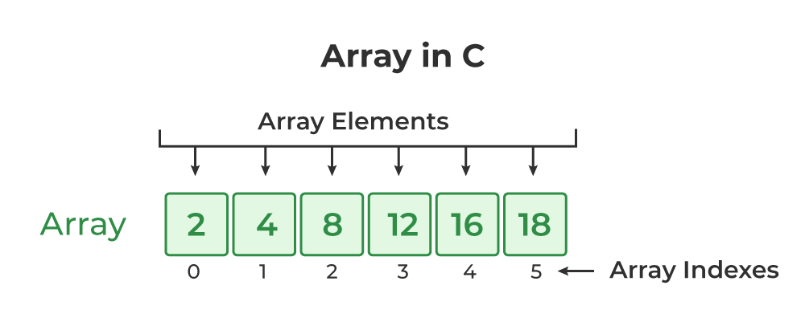

¿Que es una array Javascript?
El objeto Array de JavaScript es un objeto global que es usado en la construcción de arrays, que son objetos tipo lista de alto nivel.
Descripciòn
Los arrays son objetos similares a una lista cuyo prototipo proporciona métodos para efectuar operaciones de recorrido y de mutación. Tanto la longitud como el tipo de los elementos de un array son variables. Dado que la longitud de un array puede cambiar en cualquier momento, y los datos se pueden almacenar en ubicaciones no contiguas, no hay garantía de que los arrays de JavaScript sean densos; esto depende de cómo el programador elija usarlos. En general estas características son cómodas, pero si, en su caso particular, no resultan deseables, puede considerar el uso de arrays con tipo.
